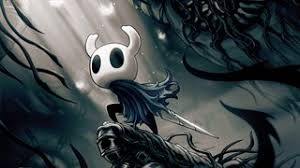
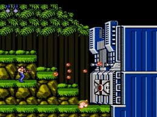
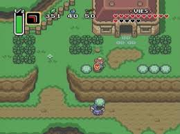

Les Jeux de Plates-formes
Un jeu de plates-formes ou jeu de plateformes (ou platformer) est un genre de jeu vidéo. Dans les jeux de plates-formes, le joueur contrôle un avatar qui doit sauter sur des plates-formes suspendues dans les airs et éviter des obstacles. Les environnements requièrent de devoir sauter ou grimper pour pouvoir être traversés. Le joueur a un contrôle sur la hauteur et la distance des sauts. L'élément le plus commun à ce genre de jeux est de proposer un bouton ou une touche dédié au saut (ou un contrôle alternatif de type tactile par exemple). D'autres manœuvres acrobatiques peuvent venir modifier le gameplay, comme l'utilisation d'un grappin ou de trampolines par exemple.
Histoire
-
Jeux 2D
Les jeux de plates-formes sont apparus au début des années 1980 et se déroulaient sur un écran fixe. Space Panic d'Universal, sorti en 1980, est parfois considéré comme le premier jeu du genre. Dans ce jeu, le joueur peut tomber mais ne peut pas sauter. Son gameplay basé sur des étages et des niveaux semble néanmoins avoir influencé le genre. Un autre précurseur est Crazy Climber de Nichibutsu en 1980.
Donkey Kong, jeu d'arcade créé par Nintendo et sorti en juillet 1981, est le premier jeu qui a permis au joueur de sauter par-dessus des obstacles et de franchir des précipices, ce qui en fait le premier jeu de plates-formes à proprement parler. Le jeu introduit le personnage de Mario qui devient une véritable icône du genre.
À partir de 1982, des jeux font s’enchaîner plusieurs écrans fixes comme Pitfall! sur Atari 2600 par exemple. D'autres jeux utilisent cette technique comme Manic Miner, Jet Set Willy, Impossible Mission ou Prince of Persia. -
Jeux 3D
Les jeux de plates-formes en 3D apparaissent au cours des années 1990, en particulier durant l'ère des consoles de cinquième génération qui se démarque par la transition de jeux 2D vers la 3D. Le jeu Alpha Waves, sorti en 1990 sur ordinateur (DOS, Amiga et Atari ST), est le premier à proposer un environnement entièrement en trois dimensions ainsi qu'une caméra rotative. En 1996 sort Super Mario 64 qui fut un exploit du jeu vidéo 3D.
Sous-genre
-
Metroidvania
Rogue, l'un des précurseurs qui popularisa le genre, s'inspire du jeu de rôle sur table Donjons et Dragons, et propose une aventure solitaire. Le jeu se déroule ainsi au tour par tour, c'est-à-dire qu'à chaque tour de jeu toutes les créatures présentes ont la possibilité soit de se déplacer soit de réaliser une action. Initialement affichés sous forme de dessins générés en texte, les descendants de Rogue ont évolué, et affichent des images.
Exemple:- Hollow knight
- Nine sols
- Metroid dread
- Castle Vania
-
Run-and-gun
Le genre de plateforme run and gun est popularisé par Probotector de Konami. Gunstar Heroes et Metal Slug sont également parmi les exemples les plus populaires de ce style. Les jeux de course et de tir à défilement latéral sont une tentative de marier les jeux de plates-formes avec les shoot'em ups, caractérisés par une attention minimale sur le saut de plate-forme précis et un accent majeur sur le tir multidirectionnel. Ces jeux sont parfois appelés « tireurs de plateforme »[réf. souhaitée]. Ce genre a de fortes racines d'arcade, et en tant que tels, ces jeux sont généralement connus pour être très difficiles et avoir une progression de jeu à sens unique très linéaire.
Exemple:
Il existe des jeux qui présentent un degré de tir élevé mais qui ne tombent pas dans ce sous-genre. Mega Man, Metroid, Ghosts 'n Goblins, Vectorman, Jazz Jackrabbit, Earthworm Jim, Cuphead et Turrican sont tous des jeux de plates-formes axés sur l'action et le tir, mais contrairement à Probotector ou Metal Slug, les éléments de saut de plateforme, ainsi que l'exploration et l'aller-retour, figure toujours en bonne place. La course et les pistolets sont généralement très purs, et bien qu'ils puissent avoir des séquences de véhicules ou d'autres changements de style, ils restent concentrés sur le tir tout au long.- Metal Slug
- Gunstar Heroes
- Probotector de Konami
-
Jeu de plateforme isométrique
Sans doute un sous-genre des plateformes 3D et 2D, les plateformes isométriques présentent un environnement tridimensionnel utilisant des graphiques bidimensionnels en projection isométrique. Bien qu'il ne s'agisse pas des premiers jeux isométriques, les premiers exemples de jeux de plateforme isométriques sont le jeu d'arcade Congo Bongo et Ant Attack pour le Sinclair ZX Spectrum, tous deux sortis en 1983.
Exemple:
Knight Lore, une suite isométrique de Sabre Wulf, a aidé à établir les conventions des premiers jeux de plateforme isométriques. Cette formule a été répétée dans des jeux ultérieurs comme Head over Heels et Monster Max. Ces jeux étaient généralement fortement axés sur l'exploration des environnements intérieurs, généralement une série de petites pièces reliées par des portes, et ont des éléments d'aventure et de puzzle distincts. Les développeurs japonais ont mélangé ce style de jeu avec celui des jeux d'action-aventure japonais comme The Legend of Zelda pour créer des jeux comme Landstalker et Light Crusader. Bien que ces jeux soient plus généralement classés comme des aventures d'action, ils sont également des plateformes isométriques et une évolution des conventions antérieures du genre. Cette influence a ensuite voyagé en Europe avec la grande aventure épique d'Adeline Software, qui mélangeait des éléments de jeu de rôle, d'aventure et de plate-forme isométrique.
Avant que les consoles ne puissent afficher de véritables graphiques 3D polygonaux, la perspective isométrique ¾ a été utilisée pour déplacer certains jeux de plateforme 2D populaires dans un gameplay en trois dimensions. Spot Goes to Hollywood était une suite du populaire Cool Spot, et Sonic 3D: Flickies' Island était la sortie de Sonic dans le sous-genre isométrique.- The Legend of Zelda
- Congo Bongo
- Landstalker
- Ant Attack